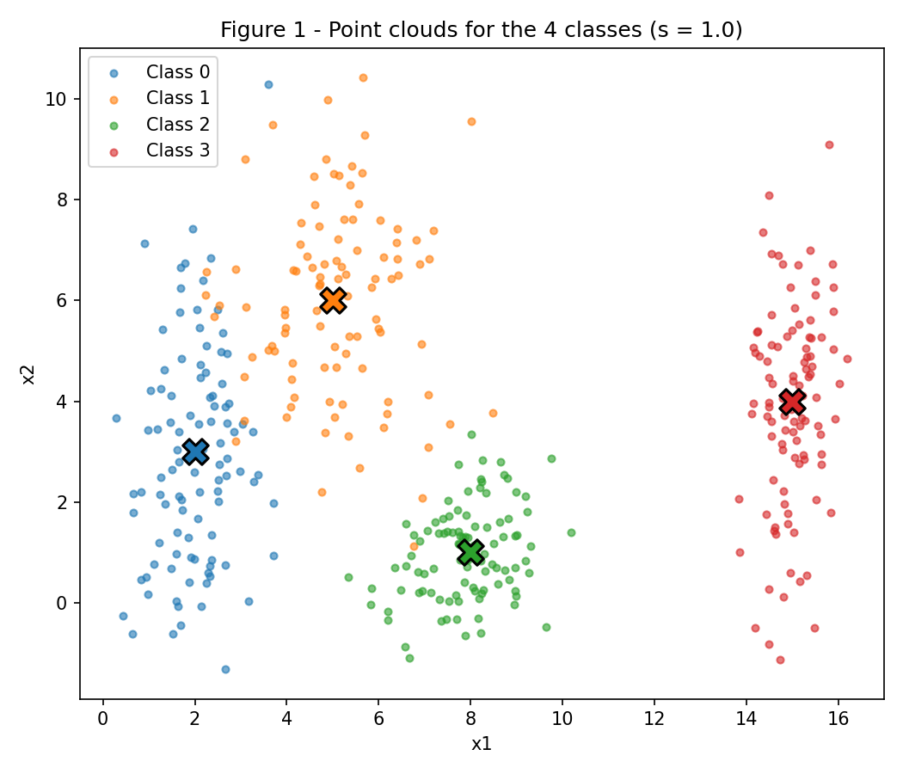
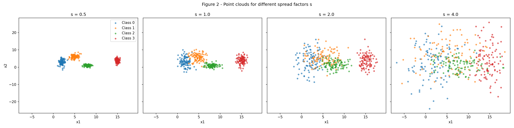
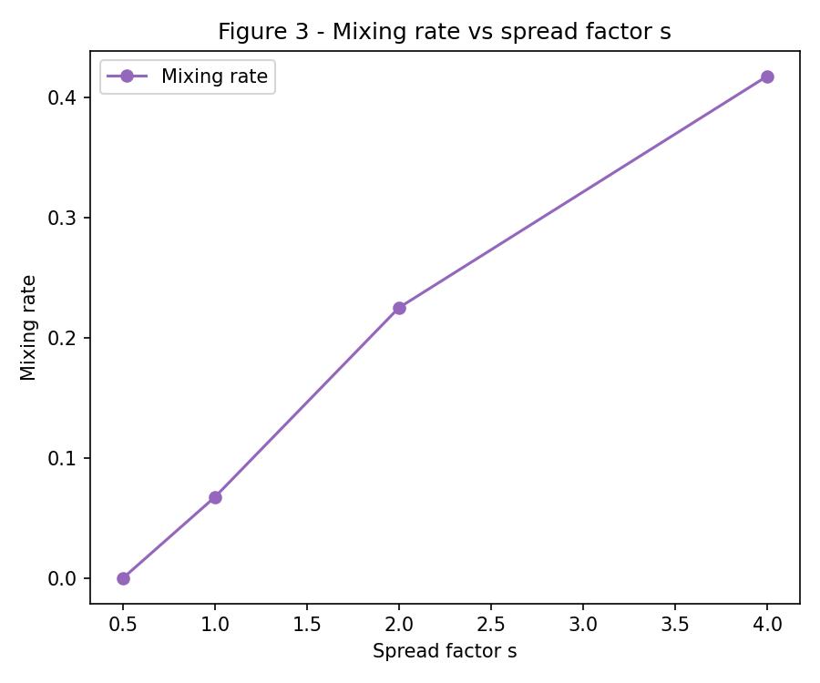
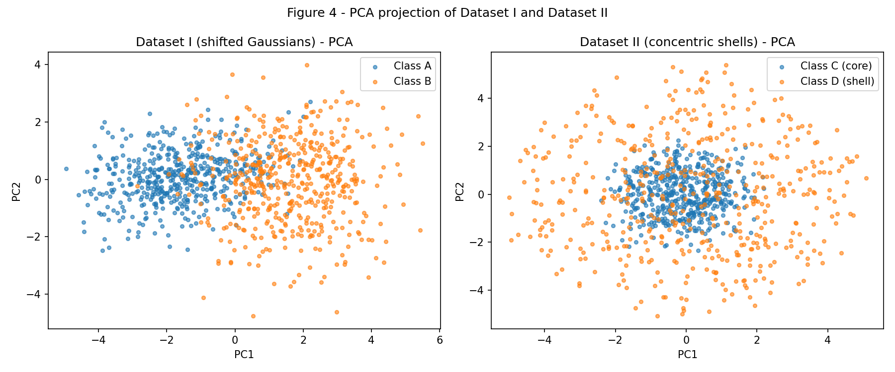
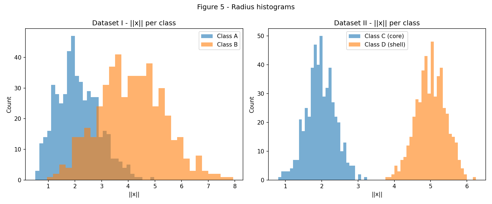
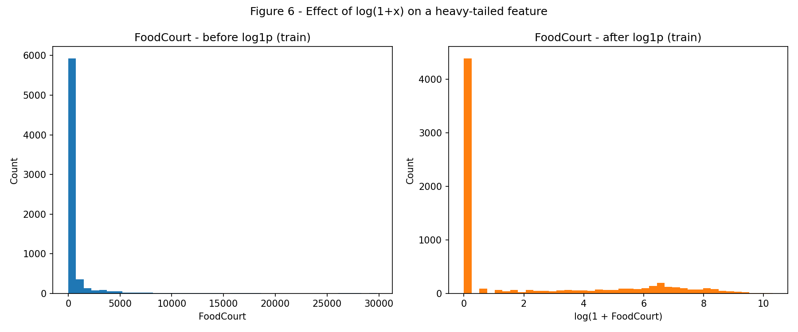

Exercise 1: Data
All code below uses rng = np.random.default_rng(42) as the single random generator for the exercise, as required. No model is trained in this exercise.
Exercise 1 - Point Clouds: Geometry and Spread in 2D
Full script for this exercise (code/ex1_point_clouds.py):
"""Exercise 1 - Point Clouds: Geometry and Spread in 2D.
Generates Figures 1, 2 and 3 and prints all the numbers required in the report
(mixing rates and separation ratios r_ij).
"""
import numpy as np
import matplotlib.pyplot as plt
FIG_DIR = "../figures"
rng = np.random.default_rng(42)
# ---- Class parameters (base standard deviations, s = 1.0) ----
means = {
0: np.array([2.0, 3.0]),
1: np.array([5.0, 6.0]),
2: np.array([8.0, 1.0]),
3: np.array([15.0, 4.0]),
}
stds = {
0: np.array([0.8, 2.5]),
1: np.array([1.2, 1.9]),
2: np.array([0.9, 0.9]),
3: np.array([0.5, 2.0]),
}
n_per_class = 100
colors = {0: "tab:blue", 1: "tab:orange", 2: "tab:green", 3: "tab:red"}
def generate_clouds(scale, rng):
"""Draw n_per_class Gaussian points per class with std multiplied by scale."""
data = {}
for c in means:
pts = rng.normal(loc=means[c], scale=stds[c] * scale, size=(n_per_class, 2))
data[c] = pts
return data
# ---------------------------------------------------------------
# Item A - Figure 1: the four clouds at s = 1
# ---------------------------------------------------------------
data_s1 = generate_clouds(1.0, rng)
fig, ax = plt.subplots(figsize=(7, 6))
for c, pts in data_s1.items():
ax.scatter(pts[:, 0], pts[:, 1], s=15, alpha=0.6, color=colors[c], label=f"Class {c}")
ax.scatter(*means[c], color=colors[c], marker="X", s=200, edgecolor="black", linewidth=1.5)
ax.set_title("Figure 1 - Point clouds for the 4 classes (s = 1.0)")
ax.set_xlabel("x1")
ax.set_ylabel("x2")
ax.legend()
fig.tight_layout()
fig.savefig(f"{FIG_DIR}/figure1.png", dpi=150)
plt.close(fig)
# ---------------------------------------------------------------
# Item B - Figure 2: 4 subplots for s in {0.5, 1.0, 2.0, 4.0}
# ---------------------------------------------------------------
scales = [0.5, 1.0, 2.0, 4.0]
datasets_by_scale = {}
fig, axes = plt.subplots(1, 4, figsize=(20, 5), sharex=True, sharey=True)
for ax, s in zip(axes, scales):
data_s = generate_clouds(s, rng)
datasets_by_scale[s] = data_s
for c, pts in data_s.items():
ax.scatter(pts[:, 0], pts[:, 1], s=12, alpha=0.6, color=colors[c], label=f"Class {c}")
ax.set_title(f"s = {s}")
ax.set_xlabel("x1")
axes[0].set_ylabel("x2")
axes[0].legend()
fig.suptitle("Figure 2 - Point clouds for different spread factors s")
fig.tight_layout()
fig.savefig(f"{FIG_DIR}/figure2.png", dpi=150)
plt.close(fig)
# ---------------------------------------------------------------
# Item B.2 - separation ratio r_ij for s = 1.0
# ---------------------------------------------------------------
def mean_std(c):
return (stds[c][0] + stds[c][1]) / 2.0
pairs = [(0, 1), (0, 2), (0, 3), (1, 2), (1, 3), (2, 3)]
print("\nSeparation ratios r_ij at s = 1.0:")
r_values = {}
for i, j in pairs:
dist = np.linalg.norm(means[i] - means[j])
denom = mean_std(i) + mean_std(j)
r = dist / denom
r_values[(i, j)] = r
print(f" r_{i}{j} = {r:.3f} (dist={dist:.3f}, sigma_bar_sum={denom:.3f})")
min_pair = min(r_values, key=r_values.get)
min_r = r_values[min_pair]
print(f"\nSmallest r_ij at s=1.0: pair {min_pair} with r = {min_r:.3f}")
print(f"Predicted smallest r_ij at s=2.0 (scales as 1/s): {min_r / 2:.3f}")
# ---------------------------------------------------------------
# Item B.3/B.4 - mixing rate per scale + Figure 3
# ---------------------------------------------------------------
def mixing_rate(data_s):
"""Fraction of points whose nearest class mean is not their own class."""
all_means = np.array([means[c] for c in sorted(means)])
n_wrong = 0
n_total = 0
for c, pts in data_s.items():
dists = np.linalg.norm(pts[:, None, :] - all_means[None, :, :], axis=2)
nearest = np.argmin(dists, axis=1)
n_wrong += np.sum(nearest != c)
n_total += len(pts)
return n_wrong / n_total
print("\nMixing rate per scale:")
mixing_rates = []
for s in scales:
rate = mixing_rate(datasets_by_scale[s])
mixing_rates.append(rate)
print(f" s = {s}: mixing rate = {rate:.3f}")
fig, ax = plt.subplots(figsize=(6, 5))
ax.plot(scales, mixing_rates, marker="o", color="tab:purple", label="Mixing rate")
ax.set_title("Figure 3 - Mixing rate vs spread factor s")
ax.set_xlabel("Spread factor s")
ax.set_ylabel("Mixing rate")
ax.legend()
fig.tight_layout()
fig.savefig(f"{FIG_DIR}/figure3.png", dpi=150)
plt.close(fig)
print("\nDone. Figures saved to", FIG_DIR)
A — Generate the clouds
Four Gaussian classes were generated with 100 samples each (means and standard deviations as specified in the assignment).
Figure 1

B — More or less spread out
The same 4 classes were regenerated 4 times, scaling all standard deviations by s ∈ {0.5, 1.0, 2.0, 4.0} while keeping the means fixed.
Figure 2

Separation ratio r_ij = ||μ_i - μ_j|| / (σ̄_i + σ̄_j) at s = 1.0
| Pair (i, j) | ‖μ_i − μ_j‖ | σ̄_i + σ̄_j | r_ij |
|---|---|---|---|
| (0, 1) | 4.243 | 3.200 | 1.326 |
| (0, 2) | 6.325 | 2.550 | 2.480 |
| (0, 3) | 13.038 | 2.900 | 4.496 |
| (1, 2) | 5.831 | 2.450 | 2.380 |
| (1, 3) | 10.198 | 2.800 | 3.642 |
| (2, 3) | 7.616 | 2.150 | 3.542 |
The smallest ratio is r₀₁ = 1.326 (classes 0 and 1), meaning these are the two closest/least separated clouds. Since r_ij scales with 1/s (the distance between means is constant, only the spread grows), at s = 2.0 the predicted smallest ratio is 1.326 / 2 = 0.663.
Mixing rate (fraction of points whose nearest class mean is not their own, purely geometric, no training):
| s | Mixing rate |
|---|---|
| 0.5 | 0.000 |
| 1.0 | 0.068 |
| 2.0 | 0.225 |
| 4.0 | 0.417 |
Figure 3

Between s = 1.0 and s = 2.0 the mixing rate jumps sharply (from 6.8% to 22.5%), which is also where r₀₁ crosses below ~1 (0.663 at s = 2.0). A ratio close to or below 1 means the distance between the two closest class centers is comparable to (or smaller than) the combined spread of the clouds, so from that scale on classes 0 and 1 can no longer be separated by a straight line without significant error.
C — Analysis
At s = 1.0 classes 0 and 1 already overlap partially (smallest r_ij = 1.326, not very large), while classes 2 and 3 are further away and cleanly separated from the rest. A single straight line cannot separate all 4 classes at once, because they are arranged as 4 distinct regions, not two half-planes. However, a set of linear boundaries (e.g. one line separating {0,1} from {2,3}, plus one line splitting 0 from 1, plus one splitting 2 from 3) can approximate the 4 regions reasonably well at s = 1.0, since each pair is still reasonably compact.
Sketch (see figures/figure1.png): a neural network would likely learn boundaries that look like straight/piecewise-linear cuts roughly between class 0 and 1 (since they're closest and overlap most) and cleaner, further-apart cuts isolating classes 2 and 3.
As the clouds spread out more (increasing s), the overlap region between classes 0 and 1 grows and the network is necessarily forced to make errors precisely in that overlap region — points that fall geometrically closer to the other class's center than to their own can not be correctly classified regardless of the boundary chosen. This matches the rising mixing rate in Figure 3: the achievable error floor for any classifier grows with s.
Exercise 2: Non-Linearity in Higher Dimensions
Full script for this exercise (code/ex2_nonlinearity.py):
"""Exercise 2 - Non-Linearity in Higher Dimensions.
Generates Dataset I (shifted Gaussians) and Dataset II (concentric shells) in
5D, projects them to 2D with PCA (Figure 4), and plots radius histograms
(Figure 5).
"""
import numpy as np
import matplotlib.pyplot as plt
from sklearn.decomposition import PCA
FIG_DIR = "../figures"
rng = np.random.default_rng(42)
n_per_class = 500
# ---------------------------------------------------------------
# Item A - Dataset I: shifted Gaussians
# ---------------------------------------------------------------
mu_A = np.zeros(5)
mu_B = np.full(5, 1.5)
cov_A = np.array([
[1.0, 0.8, 0.1, 0.0, 0.0],
[0.8, 1.0, 0.3, 0.0, 0.0],
[0.1, 0.3, 1.0, 0.5, 0.0],
[0.0, 0.0, 0.5, 1.0, 0.2],
[0.0, 0.0, 0.0, 0.2, 1.0],
])
cov_B = np.array([
[1.5, -0.7, 0.2, 0.0, 0.0],
[-0.7, 1.5, 0.4, 0.0, 0.0],
[0.2, 0.4, 1.5, 0.6, 0.0],
[0.0, 0.0, 0.6, 1.5, 0.3],
[0.0, 0.0, 0.0, 0.3, 1.5],
])
class_A = rng.multivariate_normal(mu_A, cov_A, size=n_per_class)
class_B = rng.multivariate_normal(mu_B, cov_B, size=n_per_class)
dataset1 = np.vstack([class_A, class_B])
labels1 = np.array([0] * n_per_class + [1] * n_per_class)
# ---------------------------------------------------------------
# Item B - Dataset II: concentric shells
# ---------------------------------------------------------------
def sample_shell(n, radius_mean, radius_std, rng, dim=5):
directions = rng.normal(size=(n, dim))
directions /= np.linalg.norm(directions, axis=1, keepdims=True)
radii = rng.normal(loc=radius_mean, scale=radius_std, size=n)
return directions * radii[:, None]
class_C = sample_shell(n_per_class, 2.0, 0.4, rng) # core
class_D = sample_shell(n_per_class, 5.0, 0.4, rng) # shell
dataset2 = np.vstack([class_C, class_D])
labels2 = np.array([0] * n_per_class + [1] * n_per_class)
# ---------------------------------------------------------------
# Item C - PCA projection (Figure 4) + explained variance
# ---------------------------------------------------------------
pca1 = PCA(n_components=2)
proj1 = pca1.fit_transform(dataset1)
pca2 = PCA(n_components=2)
proj2 = pca2.fit_transform(dataset2)
fig, axes = plt.subplots(1, 2, figsize=(12, 5))
for lbl, name in [(0, "A"), (1, "B")]:
mask = labels1 == lbl
axes[0].scatter(proj1[mask, 0], proj1[mask, 1], s=12, alpha=0.6, label=f"Class {name}")
axes[0].set_title("Dataset I (shifted Gaussians) - PCA")
axes[0].set_xlabel("PC1")
axes[0].set_ylabel("PC2")
axes[0].legend()
for lbl, name in [(0, "C (core)"), (1, "D (shell)")]:
mask = labels2 == lbl
axes[1].scatter(proj2[mask, 0], proj2[mask, 1], s=12, alpha=0.6, label=f"Class {name}")
axes[1].set_title("Dataset II (concentric shells) - PCA")
axes[1].set_xlabel("PC1")
axes[1].set_ylabel("PC2")
axes[1].legend()
fig.suptitle("Figure 4 - PCA projection of Dataset I and Dataset II")
fig.tight_layout()
fig.savefig(f"{FIG_DIR}/figure4.png", dpi=150)
plt.close(fig)
var1 = pca1.explained_variance_ratio_.sum()
var2 = pca2.explained_variance_ratio_.sum()
print(f"Explained variance (PC1+PC2) - Dataset I: {var1:.3f}")
print(f"Explained variance (PC1+PC2) - Dataset II: {var2:.3f}")
# ---------------------------------------------------------------
# Item C - center distance and radius histograms (Figure 5)
# ---------------------------------------------------------------
dist1 = np.linalg.norm(class_A.mean(axis=0) - class_B.mean(axis=0))
dist2 = np.linalg.norm(class_C.mean(axis=0) - class_D.mean(axis=0))
print(f"Distance between class centers - Dataset I: {dist1:.3f}")
print(f"Distance between class centers - Dataset II: {dist2:.3f}")
radii1_A = np.linalg.norm(class_A, axis=1)
radii1_B = np.linalg.norm(class_B, axis=1)
radii2_C = np.linalg.norm(class_C, axis=1)
radii2_D = np.linalg.norm(class_D, axis=1)
fig, axes = plt.subplots(1, 2, figsize=(12, 5))
axes[0].hist(radii1_A, bins=30, alpha=0.6, label="Class A")
axes[0].hist(radii1_B, bins=30, alpha=0.6, label="Class B")
axes[0].set_title("Dataset I - ||x|| per class")
axes[0].set_xlabel("||x||")
axes[0].set_ylabel("Count")
axes[0].legend()
axes[1].hist(radii2_C, bins=30, alpha=0.6, label="Class C (core)")
axes[1].hist(radii2_D, bins=30, alpha=0.6, label="Class D (shell)")
axes[1].set_title("Dataset II - ||x|| per class")
axes[1].set_xlabel("||x||")
axes[1].set_ylabel("Count")
axes[1].legend()
fig.suptitle("Figure 5 - Radius histograms")
fig.tight_layout()
fig.savefig(f"{FIG_DIR}/figure5.png", dpi=150)
plt.close(fig)
print("\nDone. Figures saved to", FIG_DIR)
A — Dataset I: shifted Gaussians
500 samples per class were drawn from 5D multivariate normal distributions with the specified means and covariance matrices.
B — Dataset II: concentric shells
500 samples per class were generated as random directions on the unit sphere in ℝ⁵ scaled by a class-dependent radius (core: ρ ~ N(2.0, 0.4); shell: ρ ~ N(5.0, 0.4)).
C — Visualize and compare
Figure 4

Explained variance of the first 2 principal components:
| Dataset | PC1 + PC2 explained variance |
|---|---|
| Dataset I (shifted Gaussians) | 0.660 |
| Dataset II (concentric shells) | 0.429 |
Dataset I's 2D PCA projection preserves more of the total variance (66.0% vs 42.9%) and, since the two Gaussian blobs are shifted along a consistent direction, the classes remain visibly separated after projection. Dataset II is radially symmetric in all directions, so PCA — being a linear, variance-maximizing projection — cannot find a 2D subspace where the two shells (which differ in radius, not direction) look separated.
Distance between class centers (in 5D) and radius histograms:
| Dataset | ‖μ₁ − μ₂‖ |
|---|---|
| Dataset I | 3.228 |
| Dataset II | 0.266 |
Figure 5

D — Analysis
-
In Dataset II the class centers are almost coincident (‖μ_C − μ_D‖ = 0.266, close to zero), yet the radius histograms (Figure 5, right) show two clearly separated peaks around ρ ≈ 2.0 and ρ ≈ 5.0. This tells us the classes differ in how far from the origin they are, not in which direction — a criterion that a linear hyperplane (which only measures position along one direction) cannot capture, since a hyperplane can't distinguish "close to the origin" from "far from the origin" in every direction simultaneously.
-
Dataset II's structure is radial: any hyperplane
w·x = bdivides ℝ⁵ into two unbounded half-spaces, but the two classes here occupy two concentric spherical shells — for every direction, there are points of both classes on both sides of any candidate hyperplane. So no choice ofw, b, and no amount of additional data, can produce zero-error linear separation; more data only makes the two overlapping spherical distributions clearer, not more linearly separable. -
PCA is a linear transformation, so a "mixed" 2D PCA projection does not by itself prove that the classes are inseparable in the original 5D space — it only proves that this particular linear projection fails. Our own results confirm this: the 5D radius histograms (Figure 5) show the two classes of Dataset II are almost perfectly separable using a simple non-linear function, even though their 2D PCA projection is mixed. Concretely, the function
f(x) = ||x||² = Σ xᵢ²(or equivalently a threshold on||x||, e.g. classify as "shell" if||x||² > 12) separates the two classes of Dataset II almost perfectly, even though no linear function ofxcan.
Exercise 3: Preparing Real-World Data for a Neural Network
(Spaceship Titanic dataset, train.csv, from Kaggle.)
Full script for this exercise (code/ex3_preprocessing.py):
"""Exercise 3 - Preparing Real-World Data for a Neural Network (Spaceship Titanic).
Reads train.csv, explores it, splits it (stratified, no leakage), preprocesses
it (imputation, encoding, log transform, scaling) and produces Figure 6.
"""
import numpy as np
import pandas as pd
import matplotlib.pyplot as plt
from sklearn.model_selection import train_test_split
from sklearn.preprocessing import StandardScaler
FIG_DIR = "../figures"
rng = np.random.default_rng(42)
pd.set_option("future.no_silent_downcasting", True)
df = pd.read_csv("../data/train.csv")
# ---------------------------------------------------------------
# Item A - get to know the data
# ---------------------------------------------------------------
print("Shape:", df.shape)
print("\nTransported value counts:")
print(df["Transported"].value_counts(normalize=True))
numeric_cols = ["Age", "RoomService", "FoodCourt", "ShoppingMall", "Spa", "VRDeck"]
categorical_cols = ["HomePlanet", "CryoSleep", "Destination", "VIP"]
spend_cols = ["RoomService", "FoodCourt", "ShoppingMall", "Spa", "VRDeck"]
print("\nNumeric features:", numeric_cols)
print("Categorical features:", categorical_cols)
missing = df.isna().sum()
missing_pct = (missing / len(df) * 100).round(2)
missing_table = pd.DataFrame({"missing_count": missing, "missing_pct": missing_pct})
missing_table = missing_table[missing_table["missing_count"] > 0]
print("\nMissing values:\n", missing_table)
print("\nSpend columns stats (mean / median / max), full data:")
print(df[spend_cols].agg(["mean", "median", "max"]))
# ---------------------------------------------------------------
# Item B - split before transforming (avoid data leakage)
# ---------------------------------------------------------------
train_df, test_df = train_test_split(
df, test_size=0.2, stratify=df["Transported"], random_state=42
)
print(f"\nTrain shape: {train_df.shape}, Test shape: {test_df.shape}")
print("\nSpend columns stats on TRAIN ONLY (pre-transformation):")
print(train_df[spend_cols].agg(["mean", "median", "max"]))
# ---------------------------------------------------------------
# Item C - preprocessing (fit on train, apply on test)
# ---------------------------------------------------------------
def preprocess(train_df, test_df):
train_df = train_df.copy()
test_df = test_df.copy()
# --- missing data ---
# numeric: fill with train median
for col in numeric_cols:
median = train_df[col].median()
train_df[col] = train_df[col].fillna(median)
test_df[col] = test_df[col].fillna(median)
# categorical: fill with train mode
for col in categorical_cols:
mode = train_df[col].mode()[0]
train_df[col] = train_df[col].fillna(mode)
test_df[col] = test_df[col].fillna(mode)
# --- feature engineering ---
for d in (train_df, test_df):
d["TotalSpend"] = d[spend_cols].sum(axis=1)
d.drop(columns=["Cabin", "Name", "PassengerId"], inplace=True)
# --- log(1+x) on spend columns (reduces heavy right tail for tanh) ---
for col in spend_cols + ["TotalSpend"]:
train_df[col] = np.log1p(train_df[col])
test_df[col] = np.log1p(test_df[col])
# --- one-hot encoding of categoricals ---
# categories fit on train only; unseen test categories are dropped by reindex
train_cat = pd.get_dummies(train_df[categorical_cols], dummy_na=False)
test_cat = pd.get_dummies(test_df[categorical_cols], dummy_na=False)
test_cat = test_cat.reindex(columns=train_cat.columns, fill_value=0)
feature_cols = numeric_cols + ["TotalSpend"]
X_train = pd.concat([train_df[feature_cols].reset_index(drop=True), train_cat.reset_index(drop=True)], axis=1)
X_test = pd.concat([test_df[feature_cols].reset_index(drop=True), test_cat.reset_index(drop=True)], axis=1)
# --- scaling: standardization fit on train only ---
scaler = StandardScaler()
X_train_scaled = pd.DataFrame(scaler.fit_transform(X_train), columns=X_train.columns)
X_test_scaled = pd.DataFrame(scaler.transform(X_test), columns=X_test.columns)
y_train = train_df["Transported"].astype(int).reset_index(drop=True)
y_test = test_df["Transported"].astype(int).reset_index(drop=True)
return X_train_scaled, X_test_scaled, y_train, y_test, train_df, test_df
before_foodcourt = train_df["FoodCourt"].copy()
X_train, X_test, y_train, y_test, train_df_p, test_df_p = preprocess(train_df, test_df)
after_foodcourt = np.log1p(before_foodcourt)
# ---------------------------------------------------------------
# Item D - Figure 6: before/after log transform + final checks
# ---------------------------------------------------------------
fig, axes = plt.subplots(1, 2, figsize=(12, 5))
axes[0].hist(before_foodcourt, bins=40, color="tab:blue")
axes[0].set_title("FoodCourt - before log1p (train)")
axes[0].set_xlabel("FoodCourt")
axes[0].set_ylabel("Count")
axes[1].hist(after_foodcourt, bins=40, color="tab:orange")
axes[1].set_title("FoodCourt - after log1p (train)")
axes[1].set_xlabel("log(1 + FoodCourt)")
axes[1].set_ylabel("Count")
fig.suptitle("Figure 6 - Effect of log(1+x) on a heavy-tailed feature")
fig.tight_layout()
fig.savefig(f"{FIG_DIR}/figure6.png", dpi=150)
plt.close(fig)
print("\nFinal checks:")
print("NaNs in X_train:", X_train.isna().sum().sum())
print("NaNs in X_test:", X_test.isna().sum().sum())
print("X_train shape:", X_train.shape)
print("X_train min/max:", X_train.values.min(), X_train.values.max())
print("X_test min/max:", X_test.values.min(), X_test.values.max())
print("\nDone. Figures saved to", FIG_DIR)
A — Get to know the data
Transportedis the binary target: whether the passenger was transported to another dimension (True/False).- Class balance is close to 50/50: 50.36%
True, 49.64%False(8693 rows total) — an almost perfectly balanced target. - Numeric features:
Age, RoomService, FoodCourt, ShoppingMall, Spa, VRDeck. - Categorical features:
HomePlanet, CryoSleep, Destination, VIP(plusCabin/Name/PassengerId, which are dropped/engineered instead of used directly).
Missing values per column:
| Column | Missing count | Missing % |
|---|---|---|
| HomePlanet | 201 | 2.31% |
| CryoSleep | 217 | 2.50% |
| Cabin | 199 | 2.29% |
| Destination | 182 | 2.09% |
| Age | 179 | 2.06% |
| VIP | 203 | 2.34% |
| RoomService | 181 | 2.08% |
| FoodCourt | 183 | 2.11% |
| ShoppingMall | 208 | 2.39% |
| Spa | 183 | 2.11% |
| VRDeck | 188 | 2.16% |
| Name | 200 | 2.30% |
Spend columns — mean, median, max (full dataset):
| Column | Mean | Median | Max |
|---|---|---|---|
| RoomService | 224.69 | 0.0 | 14327.0 |
| FoodCourt | 458.08 | 0.0 | 29813.0 |
| ShoppingMall | 173.73 | 0.0 | 23492.0 |
| Spa | 311.14 | 0.0 | 22408.0 |
| VRDeck | 304.85 | 0.0 | 24133.0 |
For every spend column the mean is far above the median (which is exactly 0 in all of them), meaning most passengers spent nothing while a minority spent a lot — a strong right-skew / heavy tail, not a symmetric spread.
B — Split before you transform
An 80/20 stratified split (by Transported, random_state=42) is performed before any imputation or scaling statistic is computed. Resulting shapes: train = (6954, 14), test = (1739, 14).
This ordering matters because any statistic (median, mean, category frequency, min/max) computed on the full dataset would leak information from the test set into the training pipeline — the model would implicitly "see" test-set characteristics during training, making the test performance estimate overly optimistic and not representative of truly unseen data.
C — Preprocess
- Missing data: numeric columns are imputed with the training-set median (robust to the outliers/skew seen in the spend columns); categorical columns are imputed with the training-set mode (most frequent category). Both statistics are fit on the training set only and reused on the test set.
- Categorical encoding:
HomePlanet,CryoSleep,Destination,VIPare one-hot encoded. The one-hot columns are fit on the training set; the test set isreindex-ed onto the training columns (fill_value=0), so any category seen only in the test set is effectively encoded as "none of the known categories" instead of crashing or creating a new column. - Feature engineering:
TotalSpend= sum of the 5 spend columns;Cabin,Name,PassengerIdare dropped (high-cardinality / identifier columns not useful as raw numeric/categorical inputs). - Heavy tails:
log(1 + x)is applied to the 5 spend columns and toTotalSpend. This compresses the long right tail (most passengers spend 0, a few spend a lot), which otherwise would saturate atanhactivation and dominate the gradient for spend-related inputs. - Scaling: Standardization (zero mean, unit variance) is fit on the training set and applied to both sets, which keeps most values close to
tanh's sensitive region ([-1, 1]) without hard-clipping outliers the way a fixed min-max normalization would.
Spend columns stats on training set only, before any transformation (used for imputation and to justify the log transform):
| Column | Mean | Median | Max |
|---|---|---|---|
| RoomService | 230.15 | 0.0 | 14327.0 |
| FoodCourt | 452.61 | 0.0 | 29813.0 |
| ShoppingMall | 170.03 | 0.0 | 12253.0 |
| Spa | 308.87 | 0.0 | 22408.0 |
| VRDeck | 296.65 | 0.0 | 20336.0 |
D — Verify and visualize
Figure 6

Final checks:
- NaNs remaining in
X_train: 0; NaNs inX_test: 0 - Final training feature matrix shape: (6954, 17)
- Value range after scaling: train min/max = -6.537 / 6.537; test min/max = -6.537 / 6.537 (the extreme values on both sides come from a few rare one-hot categories; the standardized numeric features themselves stay much closer to the tanh-relevant range).
The preprocessing decision most likely to affect training the most is the log(1+x) transform on the spend columns: without it, the heavy-tailed raw values (max in the tens of thousands vs. a median of 0) would produce enormous standardized outliers, which combined with tanh's saturation for large inputs would make gradients vanish for most training examples along those dimensions.
Results summary
| # | Item | Value |
|---|---|---|
| 1 | Mixing rate at s = 0.5 | 0.000 |
| 2 | Mixing rate at s = 1.0 | 0.068 |
| 3 | Mixing rate at s = 2.0 | 0.225 |
| 4 | Mixing rate at s = 4.0 | 0.417 |
| 5 | Smallest r_ij at s = 1.0 (pair) | 1.326 (pair 0–1) |
| 6 | Distance between centers — Dataset I | 3.228 |
| 7 | Distance between centers — Dataset II | 0.266 |
| 8 | Explained variance PC1+PC2 — Dataset I | 0.660 |
| 9 | Explained variance PC1+PC2 — Dataset II | 0.429 |
| 10 | Proportion of positive class in Transported |
50.36% |
| 11 | Mean/median of FoodCourt (train, pre-transform) |
mean 452.61 / median 0.0 |
| 12 | Final training feature matrix shape | (6954, 17) |
| 13 | Min/max after scaling (train, test) | -6.537 / 6.537 (both sets) |